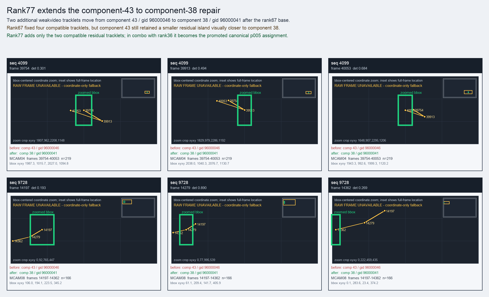

Rank77 extends the component-43 to component-38 repair
Two additional weakvideo tracklets move from component 43 / gid 96000046 to component 38 / gid 96000041 after the rank67 base.
Before
component 43, gid 96000046, component_size 96
component 43, gid 96000046, component_size 96
After
component 38, gid 96000041, component_size 49, decision_status subpart_reassign
component 38, gid 96000041, component_size 49, decision_status subpart_reassign
Evidence
target_sim=0.7136, target_margin=-0.0071, source_rest_margin=0.1510
Raw frame
unavailable_coordinate_fallback
target_sim=0.7136, target_margin=-0.0071, source_rest_margin=0.1510
Raw frame
unavailable_coordinate_fallback
Failure and fix
Old failure: Rank67 fixed four compatible tracklets, but component 43 still retained a smaller residual island visually closer to component 38.
New implementation: Rank77 adds only the two compatible residual tracklets; in combo with rank36 it becomes the promoted canonical p005 assignment.
BBox evidence

Moved tracklets
| seq | video | gid | component | frames | dets |
|---|---|---|---|---|---|
| 4099 | vlincs_MS01_MC0001_MCAM04_2024-03-Tc6 | 96000046 -> 96000041 | 43 -> 38 | 39754-40053 | 219 |
| 9728 | vlincs_MS01_MC0001_MCAM08_2024-03-Tc6 | 96000046 -> 96000041 | 43 -> 38 | 14197-14362 | 166 |